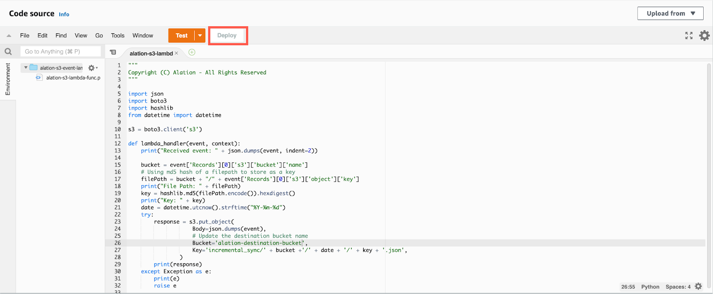

Set Up Incremental MDE¶
Alation Cloud Service Applies to Alation Cloud Service instances of Alation
Customer Managed Applies to customer-managed instances of Alation
You can configure metadata extraction (MDE) to be incremental. This means that each consecutive MDE job will extract new metadata and metadata updates but not the full scope of selected metadata.
Note
The very first MDE job will extract all accessible metadata.
Before enabling incremental MDE, review these considerations:
Incremental extraction is recommended when the bucket size is very large but only a few changes happen to its contents daily.
The time required for incremental extraction depends on the number of incremental events and the number of affected objects. The more incremental events there are, the longer time may be required. According to Alation’s internal MDE performance analysis:
It may take about 85 minutes to process 100K incremental events.
Full extraction (non-incremental) may take five to six hours to process 50M objects.
Incremental MDE has a number of limitations:
As part of configurations for incremental extraction, you’ll be required to create event notifications for the source buckets. If you already have event notifications set up on the source buckets, you will not be able to use incremental extraction.
The last modification time will not be displayed for the folder objects.
The last modified timestamp for files for incremental events will be displayed as the time.
To configure incremental MDE, you will need to perform configurations in Amazon S3 and in Alation:
Perform Configuration in Amazon S3¶
Use the step in this section to configure incremental MDE manually.
Note
You can also use a Terraform script provided by Alation: Use Terraform to Set Up Inventory and Incremental MDE.
Step 1: Create an IAM Role for a Lambda Function¶
Create an IAM role for the Lambda function you’ll create later. Attach the AWS managed policy AWSLambdaBasicExecutionRole and adjust the Resource value to the destination bucket created in Create an S3 Bucket to Store Inventory Reports. The role provides write access to the destination bucket.
Refer to Lambda execution role in AWS documentation for more details.
Policy example:
{
"Version": "2012-10-17",
"Statement": [
{
"Sid": "VisualEditor0",
"Effect": "Allow",
"Action": "s3:PutObject",
"Resource": "arn:aws:s3:::alation-destination-bucket/*"
}
]
}
Step 2: Create a Lambda Function¶
You’ll need to create a Lambda function to write event notifications to the destination bucket. The function must be created in the same AWS region as the destination bucket:
Open the Lambda service from your S3 console and follow the steps given below to create the Lambda function in the same region as the destination bucket:
Select Create Function.
Select Use a blueprint option and s3-get-object-python template option. Click Configure.
Enter the Function name. Example:
capture-events-for-alation.In Execution role, choose Use an existing role and select the IAM role created in Step 1.
Click Create function.
Replace the code in the window shown below with the code provided here. Make sure to use the correct destination bucket name.
Code to replace:
""" Copyright (C) Alation - All Rights Reserved """ import json import boto3 import hashlib from datetime import datetime s3 = boto3.client('s3') def lambda_handler(event, context): print("Received event: " + json.dumps(event, indent=2)) bucket = event['Records'][0]['s3']['bucket']['name'] # Using md5 hash of a filepath to store as a key filePath = bucket + "/" + event['Records'][0]['s3']['object']['key'] print("File Path: " + filePath) key = hashlib.md5(filePath.encode()).hexdigest() print("Key: " + key) date = datetime.utcnow().strftime("%Y-%m-%d") try: response = s3.put_object( Body=json.dumps(event), # Update the destination bucket name Bucket='alation-destination-bucket', Key='incremental_sync/' + bucket +'/' + date + '/' + key + '.json', ) print(response) except Exception as e: print(e) raise e
Click Deploy after replacing the code.
{kind=link}
{kind=link}
{kind=link}
{kind=link}
Step 3: Create Event Notifications¶
Important
Perform this configuration for each source bucket.
To create an event notification:
Open the source buckets where you want to create an event configuration. For each bucket, perform the following:
Go to Properties > Event Notifications and click Create event notification.
Provide the Event name.
Select the type of events that need to be captured from this source bucket.
Under Destination, select Lambda function.
Under Specify Lambda function, select Choose from your Lambda functions.
Select the Lambda function that is created in Step 2: Create a Lambda Function from the dropdown list.
{kind=link}
{kind=link}
{kind=link}
{kind=link}
Perform Configuration in Alation¶
Use the information in Set Up Incremental MDE to configure incremental MDE in Alation.